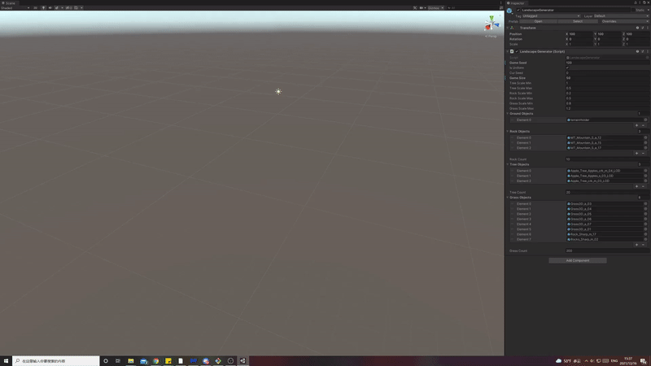

Player tap space or tap on screen to jump, and player control the red block to avoid colliding with the obstacle. The scoreboard records the maximum distance from the player to travel in one consecutive run. Game states are saved automatically and player can always resume to the level they are at. For infinite levels generation, platforms are created, and they are generated in random sequence for each level, also each level has its own platforms pool to choose from. Platforms would also be despawned after player passing them to save memory and improve performance. The beta version is available for WebGL, Android and iOS versions would need more polishing and testing before the launch.

The Landscape Generator used in the game is a self-developed generator that uses the procedural generation algorithm. All attributes are tunable and can be highly customized, users can easily put in different prefabs and generate their unique landscape with seed. The generator uses raycasting to locate each spawn point and sequentially places each item. This would allow objects to be overlaps with each other which create a more dynamic scene.

As a side project of mine, not only did I learn a lot about Unity, it also gave me a deep understanding of game design and development. As a beginner of game design with Unity, I am really surprised that this will bring me so many challenges, and at the same time, I am also surprised that this will bring me so many surprises. Please look forward to the official version which would launch on Google Store and App Store! Click --> Beta Version